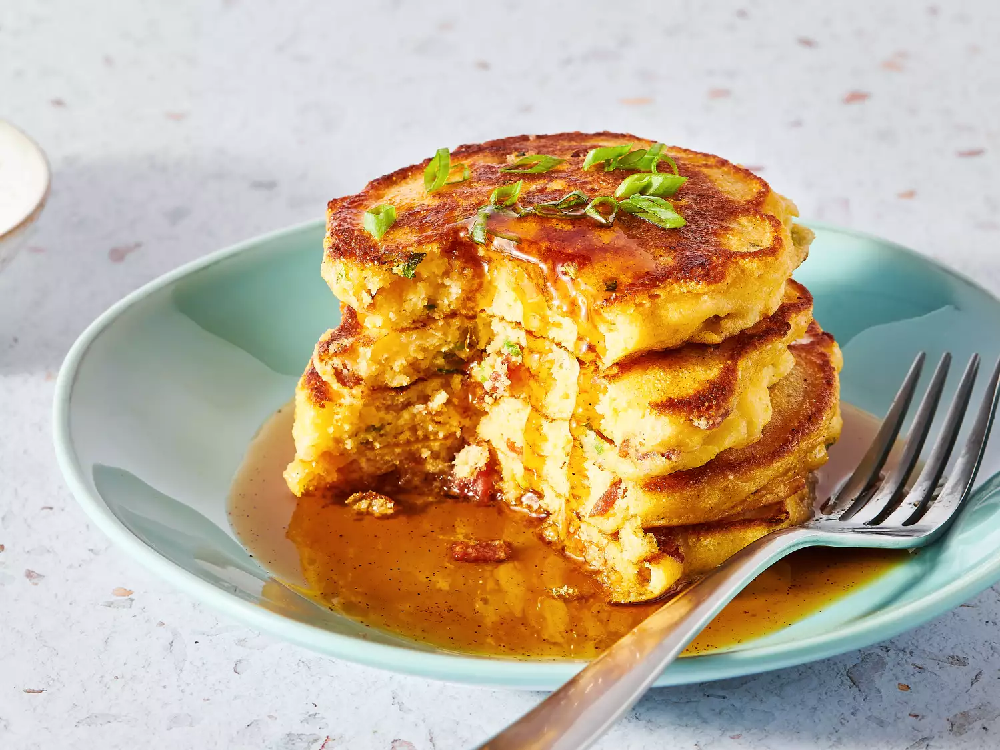

Bacon-Cheddar Pancakes

Description
Sweet and savoury twist on a favourite American breakfast food.
More popularly known as "Mancakes". Ugh.
Ingredients
- 1 cup or 8 ounces bacon, chopped
- 1/2 cup thinly sliced green onions
- 1 1/4 cups all-purpose flour
- 3/4 cup cornmeal
- 1 tbsp baking powder
- 3/4 tsp salt
- 1 pinch ground black pepper
- 1 pinch cayenne pepper
- 1 1/3 cups milk
- ~60 g or 2 ounces sharp cheddar cheese, grated
- 2 large eggs, beaten
- 2 tbsps butter, melted
- 1 tbsp white sugar
- 1 cup warm maple syrup
- Chili powder, to taste (1/8 tsp recommended)
- 1 tsp vegetable oil
- 1 tsp butter
Steps
- Gather all ingredients.
- Cook bacon in a large skillet over medium-high heat, stirring occasionally, until evenly browned, about 10 minutes. Off heat, stir green onions into bacon; sauté in hot drippings until slightly softened, 1 to 2 minutes. Transfer bacon mixture to a strainer; drain. Reserve drippings.
- Whisk flour, cornmeal, baking powder, salt, black pepper, and cayenne pepper together in a large bowl; whisk in drained bacon mixture, milk, Cheddar cheese, eggs, melted butter, and sugar until batter is smooth. Let batter rest for 10 minutes.
- Whisk maple syrup and chipotle chile powder together in a small bowl until chile powder is completely dissolved.
- Heat 1 teaspoon reserved drippings, 1 teaspoon oil, and 1 teaspoon butter on a griddle over medium-high heat. Drop ¼ cupfuls of batter per mancake onto the griddle; cook until bubbles form and edges are dry, 3 to 4 minutes.
- Flip; cook until browned on other side, 2 to 3 minutes. Repeat with remaining batter.
- Transfer to a plate; top with maple syrup.
Home